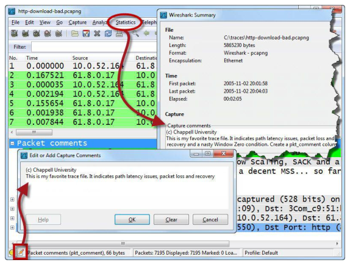
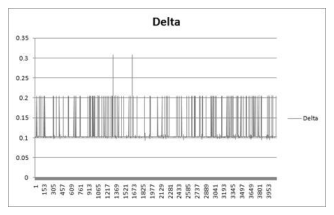
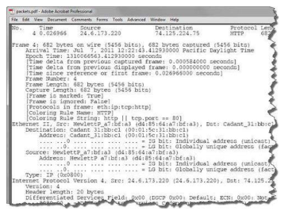
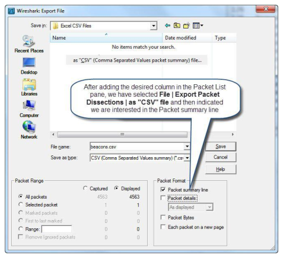
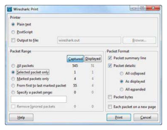

Wireshark Network Analysis 2nd Ed · Laura Chappell
A capture without annotations is just raw data.
Add context with packet comments, save in the right format, and export specific packets or objects for sharing and further analysis.
No questions yet.
No notes yet.
💡THINK FIRST · PACKET AND CAPTURE COMMENTS
pcapng format supports both packet-level and capture-level comments. Why is this valuable for forensics and incident response?
HINT
Think about what happens when a capture file is shared weeks later with someone who wasn't on-site.
MODEL ANSWER
Comments embedded in the pcapng file travel with the capture — they're not in a separate document that can become separated. A capture-level comment records: who captured it, when, which interface, why, and what was observed. Packet-level comments mark specific packets of interest: 'this is the exploit delivery', 'this is the exfiltrated file', 'TCP RST here caused the connection failure'. When the file is shared or re-examined months later, the context survives. In legal/forensic contexts, comments become part of the evidence chain and can document chain of custody.
Packet and Capture Comments
Packet Comments
Add a comment to any specific packet: right-click the packet → Packet Comment (Ctrl+Alt+C). Packets with comments show a speech bubble icon in the packet list.
Filter to commented packets: frame.comment (existence test) or frame.comment contains "error"
Capture (File-Level) Comments
Add a comment to the entire capture file: Statistics → Capture File Properties → click Add Comment. This adds a global capture comment visible when anyone opens the file.
Requirements
Only pcapng format supports comments — pcap does not
Comments are preserved when saving as pcapng
Comments are lost if you save as pcap format
PCAPNG ONLYComments require pcapng format. If you save as .pcap, all comments are permanently lost. Always use .pcapng for captures you intend to annotate or share with context.
🧠
MENTAL NOTE
Packet comments: right-click → Packet Comment. Capture comment: Statistics → Capture File Properties → Add Comment. Filter: frame.comment. ONLY pcapng supports comments — saving as pcap loses all annotations. Speech bubble icon in packet list = packet has a comment.
📷Figure 166 — open trace file to view
Figure 166. shows individual packet annotations, the Packet Comments column and the Expert Info Packet Comments tab. Note that you can doubleclick on a comment in the Expert Info tab to open and edit a

📷Figure 167 — open trace file to view
Figure 167. Comments about the entire trace file can be seen when you select Statistics | Summary or click the Packet Comments icon on the Status Bar

📷Figure 173 — open trace file to view
Figure 173. Plotting the delta time between beacons
Ask a Question
Add a Note
💡THINK FIRST · SAVING CAPTURE FILES
What is the difference between Ctrl+S and File → Export Specified Packets, and when would you use the export function rather than save?
HINT
Think about sharing a subset of a large capture with a vendor or colleague.
MODEL ANSWER
Ctrl+S saves the entire capture to the current file. 'Export Specified Packets' creates a new file containing only a subset: the displayed packets (matching the current display filter), marked packets, or a packet range. Use this when: sharing only the relevant portion with a vendor (don't send 500MB when the relevant exchange is 50 packets); when the capture contains sensitive data from other conversations; when you want to isolate a specific TCP stream as its own file for sharing.
Saving Capture Files
Save Options
Ctrl+S — save to current file (overwrites)
Ctrl+Shift+S — Save As (new filename, format choice)
File → Export Specified Packets — save a subset of packets to a new file
Export Specified Packets Options
All packets — saves everything (same as Save As)
Displayed packets — saves only packets matching the current display filter
Marked packets — saves only packets marked with Ctrl+M
pcap — maximum compatibility with older tools. No comments or metadata.
CSV/JSON — for importing into other analysis tools
COMMON WORKFLOWFilter to the relevant conversation → File → Export Specified Packets → Displayed packets → save as a small pcapng file → share with vendor or colleague. Strips all irrelevant and potentially sensitive traffic.
🧠
MENTAL NOTE
Export Specified Packets: save only displayed (filter-matched) or marked packets to a new file. Key for sharing relevant subsets without exposing full captures. Always choose pcapng unless tool compatibility requires pcap. Ctrl+S = overwrite current; Ctrl+Shift+S = Save As.
📷Figure 168 — open trace file to view
Figure 168. shows the Save As window. We can choose whether to save the displayed packets only, the selected packet, marked packets, first to last marked packets or a range of packets. In our trace f

📷Figure 170 — open trace file to view
Figure 170. Printed packets retain formats for readability Export Packet Content for Use in Other Programs Use File | Export Packet Dissections to create additional graphs, search for specific conte

📷Figure 171 — open trace file to view
Figure 171. We have chosen to export displayed packets to CSV format
Ask a Question
Add a Note
💡THINK FIRST · EXPORT PACKET DATA
File → Export Objects → HTTP extracts all transferred objects from a capture. Beyond finding files, what security-relevant information can you extract this way?
HINT
Think about what an attacker might deliver over HTTP that isn't a benign document.
MODEL ANSWER
Export Objects → HTTP can extract: malware executables (.exe, .dll) delivered via drive-by downloads; exploit payloads; JavaScript files that contain obfuscated code; configuration files downloaded by malware; C2 callback data. Each extracted file can be submitted to VirusTotal or a sandbox for analysis. The filename column shows the URI path (which may reveal the malware family or C2 infrastructure). Content-Type mismatches (e.g. text/html containing an executable) are red flags.
Export Packet Data
Export Objects
File → Export Objects → select protocol:
HTTP — all objects transferred over HTTP (images, scripts, executables, documents)
FTP-DATA — files transferred via FTP
SMB — files accessed over SMB/CIFS
DICOM — medical imaging files
TFTP — TFTP file transfers
In the dialog: see filename, packet number, size, hostname for each object. Click Save or Save All to export to disk.
Export as CSV / JSON / XML
File → Export Packet Dissections → As CSV / JSON / Plain Text. Exports the packet list (with columns) in text format for import into spreadsheets, SIEM, or custom analysis tools.
Export as Hex Dump
File → Export Packet Dissections → As Plain Text. Shows each packet's hex dump and dissection — useful for documentation.
MALWARE ANALYSISExtract malware delivered over HTTP with Export Objects → HTTP. Save to a sandbox environment and analyze with VirusTotal or a dynamic malware sandbox. Never run extracted files on a production machine.
🧠
MENTAL NOTE
Export Objects: extracts transferred files from HTTP, FTP, SMB, TFTP in one step. Find malware deliveries, exfiltrated documents, configuration downloads. File → Export Packet Dissections → CSV/JSON for SIEM import. Each extracted file = one transferred object from the capture.

📷Figure 169 — open trace file to view
Figure 169. You can print to a text or PostScript file
📷Figure 174 — open trace file to view
Figure 174. Click the Copy button to save the data from the Conversation or Endpoint windows in CSV format
Ask a Question
Add a Note
Marking and Printing Packets
Marking Packets
Mark a packet with Ctrl+M (or right-click → Mark/Unmark Packet). Marked packets appear with a black background in the packet list. Navigate between marks: Ctrl+Shift+N (next) / Ctrl+Shift+B (previous).
Use marking to tag packets of interest during analysis, then export only the marked packets with File → Export Specified Packets → Marked packets.
Ignoring Packets
Right-click → Ignore Packet — the packet is grayed out and excluded from statistics and displays. Useful for ignoring known-good background traffic without a display filter.
Printing
File → Print. Options to print all, displayed, marked, or a range. Prints the packet list view with configured columns. For documentation, include both the packet list and selected packet details.
PRINT LEGIBILITYWireshark's default dark coloring rules don't print well in black and white. Before printing, consider disabling colorization (View → Colorize Packet List) or choosing colors with good contrast for monochrome output.
🧠
MENTAL NOTE
Mark packets: Ctrl+M. Navigate marks: Ctrl+Shift+N / Ctrl+Shift+B. Export only marked: File → Export Specified Packets → Marked. Ignore packets: right-click → Ignore (grays out without deleting). Print: File → Print (all, displayed, or marked).
📷Figure 172 — open trace file to view
Figure 172. We will graph the contents of the Delta column
Ask a Question
Add a Note
TL;DR — CHAPTER 12
Packet comments (right-click → Packet Comment) and capture comments (Statistics → Capture File Properties) embed context that travels with the pcapng file — lost if saved as pcap. Export Specified Packets saves a filtered subset for sharing. Export Objects extracts HTTP/FTP/SMB transferred files — including malware. Mark packets (Ctrl+M) to tag findings and export them separately.
Review Questions
Q12.1
Why do packet and capture comments require pcapng format, and what happens if you save a commented capture as pcap?
HINT
What feature does pcap lack that pcapng supports?
ANSWER
The pcap (libpcap) format was designed for simple packet storage — it has no metadata fields for comments, interface information, or per-packet annotations. pcapng (PCAP Next Generation) was specifically designed to support multiple interfaces, comments, statistics, and extensible metadata blocks. If you save a pcapng capture with comments as a .pcap file, Wireshark warns you that comments will be lost, and all packet and capture comments are permanently discarded in the resulting file.
Q12.2
You have a 500 MB capture file containing an HTTP session of interest in a 5-second window. How do you share only the relevant packets with a vendor?
HINT
What tool and settings accomplish this?
ANSWER
(1) Apply a display filter to isolate the HTTP session: e.g. 'tcp.stream eq 12 or tcp.stream eq 13' (the streams identified by following them). Alternatively, use 'ip.addr == server_ip and http'. (2) File → Export Specified Packets → select 'Displayed packets' → choose a new filename → save as pcapng. The resulting file contains only the filtered packets. Optional: add a packet comment documenting the analysis context before exporting.
Q12.3
How do you extract all files downloaded over HTTP in a capture for malware analysis?
HINT
What Wireshark feature automates this?
ANSWER
File → Export Objects → HTTP. Wireshark presents a dialog listing all HTTP objects transferred in the capture with filename, packet number, size, and hostname. Select the files of interest (or Save All) and choose a destination directory. Submit extracted executables (.exe, .dll, .js) to VirusTotal or a sandbox. Check for Content-Type mismatches (e.g. text/html delivering an executable) — these indicate potential drive-by downloads or C2 communications. Always handle extracted files in an isolated environment.